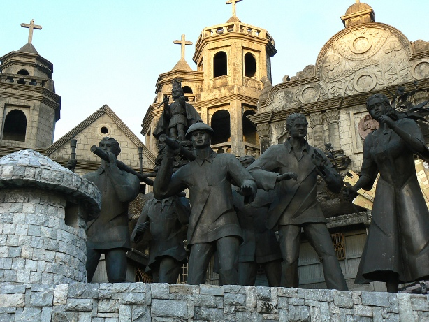
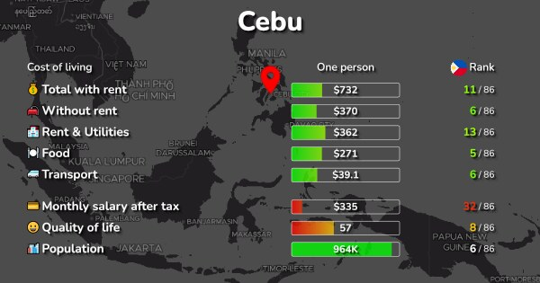

| Cebu is a province in the Philippines consisting of the Cebu Island and many other surrounding islands. Its name’s derivation has many alternative interpretation but according to history, it was derived from the word “Sibu” which means “trade”. |
Cebu City is a coastal highly urbanized city in the Central Visayas region. Although administratively independent due to its distinction as highly urbanized city, Cebu City is commonly grouped with the island province of Cebu. |
The economy of the Province of Cebu is the 2nd largest in the Philippines according to the Philippine Statistics Authority |
1.Cebu Ocean Park
2.Fort San Pedro
3.Magellan’s Cross
4.Taoist Temple
5.Yap-San Diego Ancestral House |
HISTORY

Cebu is a province in the Philippines consisting of the Cebu Island and many other surrounding islands. Its name’s derivation has many alternative interpretation but according to history, it was derived from the word “Sibu” which means “trade”. During the reign of Rajah Humabon, the island has since become an important trading center where various products are being bartered like agricultural products, precious stones, perfumes, etc. Its harbors has become known vernacularly as “Sinibuayng Hingpit” which means “the place for trading” which later was shortened to sibu or sibo (“to trade”) from which the modern name “Cebu” came from.
It is known to be a fishing village before the Spaniards came but became industrialized through the years. It is now one of the most developed provinces in the Philippines, with Cebu City as the center of commerce and industry.
DEMOGRAPHICS

Cebu City's 2024 population is now estimated at 1,042,613. In 1950, the population of Cebu City was 178,256. Cebu City has grown by 17,668 in the last year, which represents a 1.72% annual change.These population estimates and projections come from the latest revision of the UN World Urbanization Prospects. These estimates represent the Urban agglomeration of Cebu City, which typically includes Cebu City's population in addition to adjacent suburban areas.